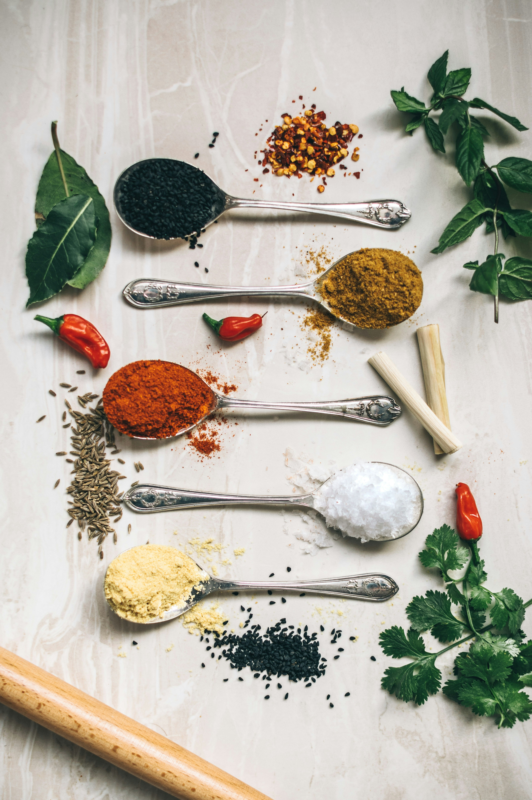
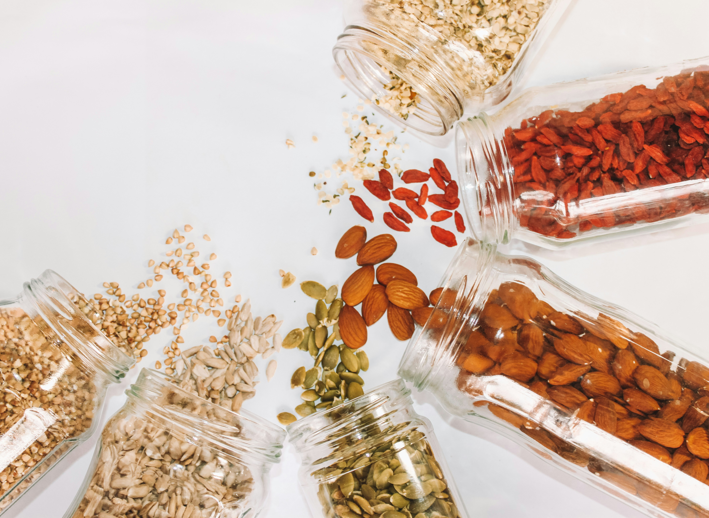

One of the most difficult parts of college cooking is that oftentimes, you are cooking for one. Like many other students, I love to buy fresh produce and other perishable goods, but depending on your schedule, you may end up throwing more out than you get to eat! However, you can still make sure your kitchen is stocked with plenty of nonperishable goods, so that you can always count on some pantry staples to get you by.

Essential Spices and Seasonings
- Salt (kosher or table salt)
- Black Pepper (ground or whole peppercorns)
- Garlic Powder
- Onion Powder
- Chili Powder
- Paprika (smoked or sweet)
- Cumin
- Cinnamon (for both savory and sweet recipes)
- Italian Seasoning (or a mix of dried oregano, basil, and thyme)
- Dried Cilantro
- Dried Parsley
- Crushed Red Pepper Flakes
- Curry Powder (optional for variety)

Essential Oils and Fats
- Olive Oil (for cooking and dressings)
- Vegetable Oil (or canola oil for high-heat cooking)
- Butter or Margarine
- Nonstick Cooking Spray
Essential Condiments
- Soy Sauce
- Hot Sauce (Sriracha, Tabasco, or your favorite)
- Ketchup
- Mustard (yellow or Dijon)
- Mayonnaise
- Vinegar (white, apple cider, or balsamic)
- Honey or Maple Syrup
- Peanut Butter (or another nut butter)

Essential Dry Goods
- Rice (white, brown, or instant)
- Pasta
- Quinoa
- Orzo
- Oats (quick or rolled for breakfast or baking)
- Beans (canned or dry; black beans, chickpeas, or kidney beans)
- Lentils
- Canned Tomatoes (diced, crushed, or paste for sauces)
- Canned Soup/Broth
- Flour (all-purpose for baking or thickening sauces)
- Sugar (granulated and optional brown sugar)
- Bread or Tortillas